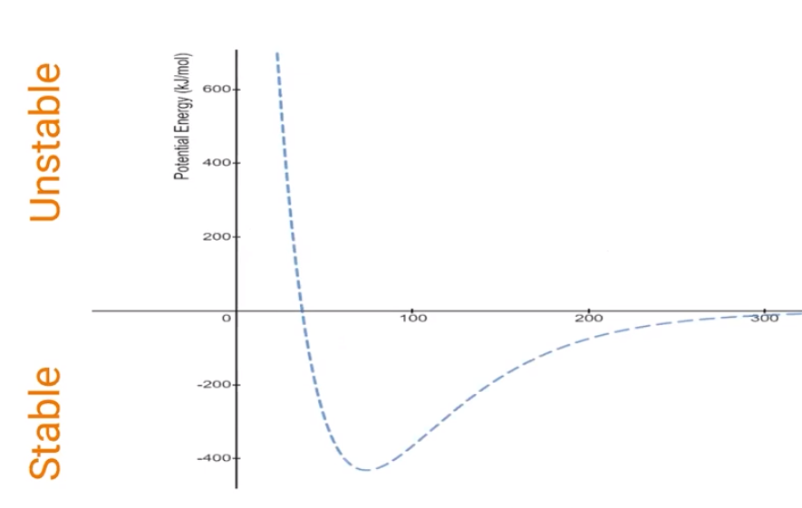
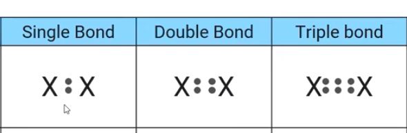
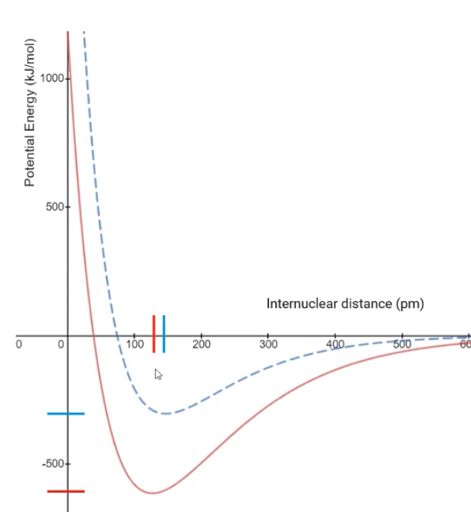
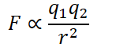

{width="6.145833333333333in" height="3.8854166666666665in"}
X axis: distance between two nuclei
Y axis: potential energy (kJ/mol)
0: Unstable atom arrangement
If they are too close together, the repulsive forces make the bond unstable (the sharp hill on the right)
If they are too far apart, they do not have enough attraction (on the left)
< 0: stable atom arrangement
Y axis is the energy of bond formation
Therefore, stable arrangements will release energy (energy is negative)
Unstable arrangements will take energy to create (energy positive)
<!-- -->
Bond order, bond length, bond strength
{width="4.09375in" height="1.3333333333333333in"}
Single Bond
Shares fewest number of electrons (2)
Weaker attraction between nucleus of one atom and bonding electrons
Weaker and longer
Double Bond
Triple Bond
Shares the most electrons
Stronger attraction between nucleus of one atoms and bonding electrons
Shorter and stronger
Example: potential energy diagram of single (blue) and double (red) bonds
{width="4.125in" height="4.46875in"}
<!-- -->
Ionic bonds and Coulomb's law
Electrostatic between a positively charged cation and a negatively charged anion
Can be explained with Coulomb's Law:
{width="1.7291666666666667in" height="0.5833333333333334in"}
Larger ion charge => larger force of attraction
Greater distance between ion => smaller force of attraction